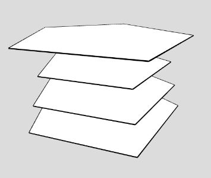
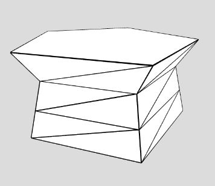

如果在三維空間中有多個面，代表將 3D 物件用刀橫切時得到的平面，例如：

將這些切面的頂點依序連接起來，就可以重組成 3D 物件：

為什麼需要這個功能呢？因為經常地，會想在三維空間中放上一些平面輪廓，然後自動生成 3D 物件，這個動作稱為放樣成形（loft）。
在討論放樣成形之前，先來看看其中一個特例，也就是若平面輪廓的頂點數相同的放樣成形，這個特例稱為掃掠（sweep）。
首先，必須定義頂點順序，對於向外的面，若我們看向它，面的頂點順序這邊採逆時針，例如，定義一個在 XY 平面上的圓面，看往 z 負方向時，頂點要是逆時針的話，可以如下：
function circlePoints(r, fn = 96) {
const aStep = TWO_PI / fn;
const points = [];
for(let a = TWO_PI; a > 0; a -= aStep) {
let {x, y} = p5.Vector.fromAngle(a, r);
points.push([x, y, 0]);
}
return points;
}
如果有很多面代表切面，用一個清單來表示：
const s1 = circlePoints(100, 5);
const sections = [
s1.map(p => [p[0] * 0.9, p[1] * 0.9, 60]),
s1.map(p => [p[0] * 0.9, p[1] * 0.9, 30]),
s1,
s1.map(p => [p[0] * 0.9, p[1] * 0.9, -30]),
s1.map(p => [p[0] * 0.8, p[1] * 0.8, -60])
];
第一個面可以直接繪製：
function fstFace(s) {
beginShape();
for(let i = s.length - 1; i >= 0; i--) {
vertex(s[i][0], s[i][1], s[i][2]);
}
endShape(CLOSE);
}
最後一個面就要注意了，因為我們要看往 z 正方面，才會是它往外的面，因此頂點順序要反過來：
function lstFace(s) {
beginShape();
for(let i = 0; i < s.length; i++) {
vertex(s[i][0], s[i][1], s[i][2]);
}
endShape(CLOSE);
}
至於掃掠時構成的面，可以每兩個面作為單位來處理，因為每個切面頂點數量相同，只要對應好索引就可以了，記得朝外的面要是逆時針：
function twoSections(s1, s2) {
for(let i = 0; i < s1.length; i++) {
const ni = (i + 1) % s1.length;
tri([s1[i], s2[ni], s2[i]]);
tri([s1[i], s2[ni], s1[ni]]);
}
}
// 繪製三角面
function tri(points) {
beginShape();
points.forEach(p => {
vertex(p[0], p[1], p[2]);
});
endShape(CLOSE);
}
這麼一來，就可以實作出 sweep：
function sweep(sections) {
fstFace(sections[0]);
for(let i = 0; i < sections.length - 1; i++) {
twoSections(sections[i], sections[i + 1]);
}
lstFace(sections[sections.length - 1]);
}
底下是個簡單的掃掠範例，每個切面的大小不同：
掃掠是建構放樣成形的基礎，上面的範例，是在 z 方向與大小做切面的變化，實際上，你還可以位移、旋轉切面等，你也可以給定一個 2D 輪廓以及路徑，實現各種擠出（extrude）功能，這之後會看到一些實現。